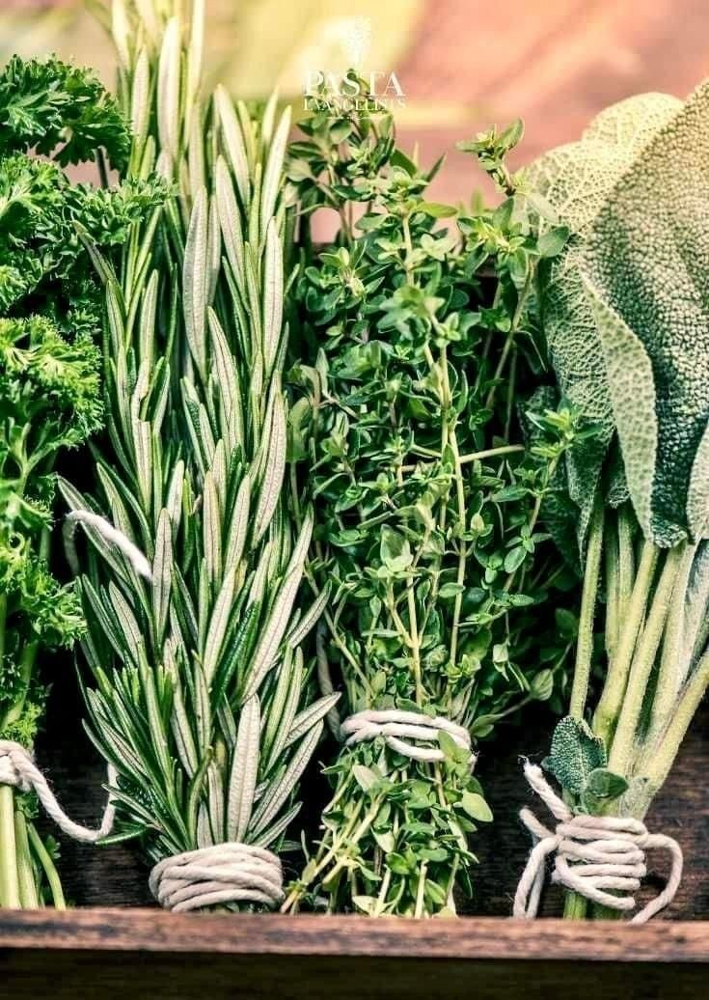
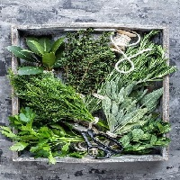
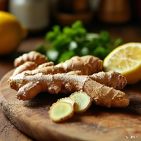
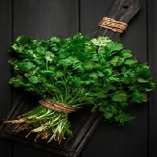
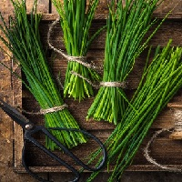
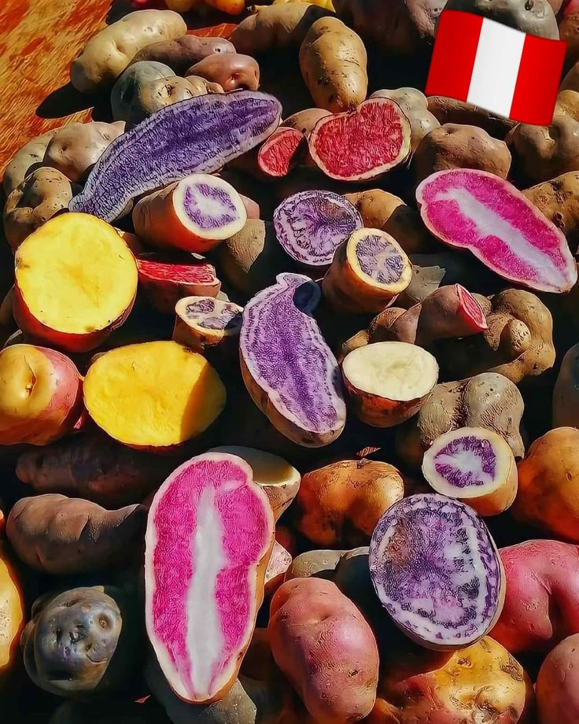
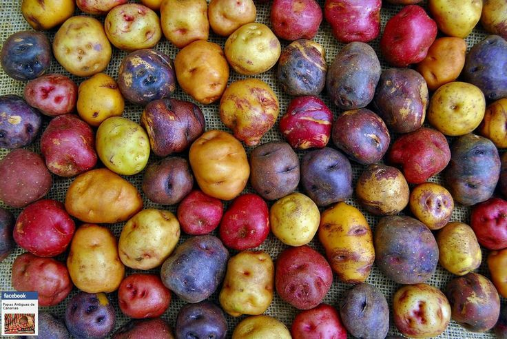

- NUESTRA HISTORIA -
Una historia de amor, familia y sabores que nos unen ❤️
Hay amores que nacen de una mirada y otros que comienzan mucho antes de encontrarse. El nuestro
empezó con una pasión compartida por la gastronomía, los aromas y esos sabores capaces de despertar
emociones y crear recuerdos.
Desde siempre, me enamoraron las especias, la magia de combinar ingredientes y la riqueza de la
cocina latinoamericana. Mientras estudiaba gastronomía, descubrí que detrás de cada receta había
mucho más que comida: había raíces, tradiciones, historias familiares y una forma única de expresar
amor.
Con el tiempo, la vida nos regaló la oportunidad de encontrarnos, enamorarnos y construir nuestra
propia familia. Y fue en ese camino juntos donde aquella pasión por la cocina encontró un nuevo
propósito:convertirse en un sueño compartido.
Así nació "Perú Wok", de la unión de dos culturas, de nuestras raíces argentinas y peruanas, y de la
inspiración de la cocina oriental. Un emprendimiento familiar que lleva en cada plato un poquito de
nuestra historia, de nuestras costumbres y de todo el amor que ponemos en lo que hacemos.
Para nosotros, cocinar es una manera de abrazar, de compartir y de acercar culturas alrededor de una
mesa. Es llevar hasta tu hogar aromas que enamoran, sabores que sorprenden y esa calidez de la
comida hecha con dedicación, como la que se prepara para quienes más queremos.
Hoy abrimos las puertas de nuestra cocina para compartir con vos mucho más que nuestros platos:
compartimos una parte de nuestra vida, de nuestra familia y de ese sueño que seguimos construyendo
juntos.
❤️ Bienvenidos a nuestra familia. Bienvenidos a Perú Wok, donde cada sabor cuenta una historia
combinando ingredientes frescos y técnicas tradicionales con un toque moderno.
- NUESTRA IDENTIDAD -
Nuestra cocina, nuestras raíces
Tres influencias, una misma pasión: compartir sabores.
En Perú Wok creemos que la cocina es un lenguaje universal, capaz de unir culturas,
despertar recuerdos y reunir a las personas alrededor de una mesa.
Nuestra propuesta reúne las raíces peruanas, la calidez argentina y la inspiración de la
cocina oriental, con aromas intensos, especias y preparaciones llenas de sabor.
Queremos transmitirte nuestro amor por los sabores y hacerlos llegar a tu mesa.









 Cusqueño.jpg)
- NUESTROS PLATOS -
Descubrí la fusión de sabores en cada plato
Cada plato tiene su esencia. Cada sabor, una historia.
En Perú Wok creemos que los mejores momentos se disfrutan alrededor de una buena mesa. Por eso,
ponemos nuestra pasión por la gastronomía en cada preparación, combinando aromas, especias y sabores
inspirados en nuestras raíces peruanas, argentinas y orientales.
Desde platos llenos de carácter, hasta combinaciones que sorprenden en cada bocado. Queremos que
encuentres ese sabor que te invite a volver.
Cocinamos con dedicación, compartimos con el corazón y ponemos en cada plato un poquito de nuestra
historia familiar.
Elegí tu favorito, reuní a quienes más querés y dejá que los sabores hagan el resto.
En Perú Wok siempre hay algo rico para compartir!
Imágenes de nuestros platos


.jpg) Lomo saltado
Lomo saltado